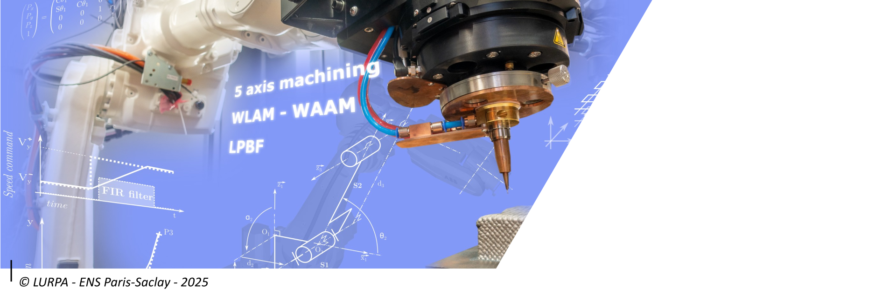

Les enseignements#
Les enseignements sont effectuées en Français mais l’ensemble des support de cours est en Anglais. Chacun des modules est détaillé dans les sections et sous-section suivantes. Les enseignements pratiques s’appuient sur les systèmes exérimentaux du LURPA ainsi que ceux du département Génie Mécanique de l’ENS Paris-Saclay (Voire les plateformes expérimentales).
Tronc Commun#

Le tronc commun du M2 AMSS (Advanced Manufacturing and Smart Systems) offre une base pluridisciplinaire couvrant des compétences clés en ingénierie et en recherche. Il inclut des enseignements sur l’optimisation et l’apprentissage automatique (techniques d’optimisation, réseaux de neurones), le développement logiciel (programmation orientée objet, preuve de concepts), et la méthodologie de recherche (analyse bibliographique, rédaction scientifique). Les étudiants sont également formés en modélisation de systèmes multiphysiques, avec un focus sur les systèmes cyber-physiques et les jumeaux numériques et en anglais scientifique pour la communication internationale. Chaque module associe cours théoriques, travaux pratiques, et projets appliqués pour développer des compétences opérationnelles et transversales adaptées aux défis de l’industrie 4.0 et de la recherche avancée.
Exploration de données et optimisation (3 ECTS)
Volume horaire : 12h de cours, 18h de TP.
Modalités d’organisation et de suivi :
Coordinateur : Gregory Faraut
Déroulement et organisation pratique :
A la fin de l’UE, l’étudiant doit être capable de :
Poser un problème d’optimisation et choisir et appliquer la technique la mieux adaptée pour résoudre ce problème ;
Choisir le type de base de données adapté à ses données suivant les paradigmes des types connus ;
Choisir et de mettre en œuvre une technique d’apprentissage.
L’évaluation de l’UE consiste en un examen écrit ainsi que la réalisation et la présentation d’un mini projet.
Objectifs pédagogiques visés :
Contenu :
Après l’apogée des technologies numériques au 20ème siècle, le début du 21ème siècle est caractérisé par l’immense quantité de données générées dans tous les domaines. Il est donc indispensable de disposer de méthodes permettant de classifier les données, d’en extraire des corrélations et des connaissances et de trouver des optimums de fonctionnement. L’objectif de ce module est d’introduire les concepts permettant de construire une base de données, de poser un problème et d’en chercher une solution optimale, et de comprendre les méthodes d’apprentissage permettant d’extraire des corrélations entre données. Pour ce faire, il sera étudié les thématiques suivantes :
Techniques d’optimisation (linéaire, non-linéaire, nombre entier, heuristique, stochastique) ;
Théorie des graphes et théorie des jeux ;
Typologie des bases de données ;
Techniques d’apprentissage et réseaux de neurones.
La part majeure des Travaux Pratiques est consacrée au traitement d’études de cas à l’aide de plateformes logicielles comportant des bibliothèques conçus pour l’optimisation et l’apprentissage.
Prérequis :
Techniques de résolution des équations linéaires et des équations différentielles linéaires Techniques de calcul matriciel.
Techniques et outils pour la preuve de concepts (4 ECTS)
Volume horaire : 12h de cours, 6h de TD, 12h de TP.
Modalités d’organisation et de suivi :
Coordinateur : Kevin Godineau
Déroulement et organisation pratique :
A la fin de l’UE, l’étudiant doit être capable de :
Structurer les données d’un logiciel,
Choisir l’architecture d’un module logiciel,
Evaluer l’efficacité des algorithmes mis en œuvre,
S’interfacer avec des logiciels tiers,
Spécifier et concevoir un module logiciel en utilisant la programmation orientée objet.
L’évaluation de l’UE consiste en la réalisation et la présentation d’un mini projet.
Objectifs pédagogiques visés :
Contenu :
En sciences appliquées, les outils informatiques sont omniprésents. Ils sont de plus en plus ouverts et peuvent être interfacés, à la condition de disposer d’un minimum de culture informatique.
Aujourd’hui, tout scientifique est amené à développer des maquettes logicielles lui permettant de valider les résultats de ses recherches au travers d’expérimentations numériques, d’exploiter des résultats numériques fournis par des logiciels spécifiques, d’interfacer différents logiciels dédiés, …
L’objectif de cette UE est d’initier les étudiants à quelques pratiques ciblées du génie logiciel, afin de les rendre opérationnels pour leurs développements futurs. Cette initiation se fera aux travers de la conduite d’un projet, consistant à développer un module logiciel en lien avec le contenu scientifique d’une des UE du master.
Prérequis :
Bases de la programmation Objet.
Méthodologie de la recherche (2 ECTS)
Volume horaire : 12h de cours, 8h de TP.
Modalités d’organisation et de suivi :
Coordinateur : Nabil Anwer
Déroulement et organisation pratique :
A la fin de l’UE, l’étudiant doit être capable de :
Conduire une analyse bibliographique sur un sujet nouveau,
Structurer un article scientifique ou une présentation orale.
L’évaluation de l’UE consiste en la réalisation, la rédaction et la soutenance d’une synthèse bibliographique.
Objectifs pédagogiques visés :
Contenu :
Cette UE a comme objectif d’informer les étudiants sur le monde de la recherche et sa structuration, de les former aux « bonnes pratiques » de la recherche, de la recherche bibliographique et de l’écriture scientifique. Sont successivement développés :
Le monde de la recherche académique et industrielle, les bonnes pratiques de la recherche, éthique de la recherche et intégrité scientifique ;
Les démarches, moyens et outils de recherche et d’analyse bibliographique ;
La rédaction d’un article scientifique ;
La critique d’un article scientifique ;
La présentation d’une communication en conférence.
Prérequis :
Aucun.
Anglais scientifique (2 ECTS)
Volume horaire : 10h de cours, 10h de TD.
Modalités d’organisation et de suivi :
Coordinateur : Catherine Colin
Déroulement et organisation pratique :
A la fin de l’UE, l’étudiant doit être capable de :
Rédiger en anglais le résumé d’une communication ;
Prendre la parole dans le contexte d’une conférence.
L’évaluation de l’UE est réalisé par contrôle continu (présentation orale, rédaction d’abstracts).
Objectifs pédagogiques visés :
Contenu :
Cette UE a pour but de familiariser les étudiants avec l’anglais tel qu’il est utilisé dans le domaine de la recherche, tant à l’écrit qu’à l’oral. On insistera donc sur les spécificités de l’anglais scientifique, à travers des exemples tirés des domaines scientifiques du master.
Le travail s’appuiera sur des supports pédagogiques en lien avec le domaine des étudiants (articles de recherche).
Prérequis :
Pratique de l’anglais niveau B2/C1.
Modélisation des systèmes multi physique (4 ECTS)
Volume horaire : 16h de cours, 4h de TD, 8h de TP.
Modalités d’organisation et de suivi :
Coordinateur : Nabil Anwer
Objectifs pédagogiques visés :
Contenu :
The aim of the course is to offer the students a comprehensive view of the modeling and simulation of Multi-Physical Manufacturing Systems in the context of smart manufacturing and an overview of the future trends in Cyber-Physical Production Systems and Digital Twin in manufacturing.
Multi-Physical Manufacturing Systems (MPMS) and Digital Twin (DT) (4h)
Definitions, Characteristics, Enabling Technologies
Cyber-Physical Production Systems
Digital Twin
Modeling and Simulation of MPMS (16h)
Model classification; Logical models; Object models; Dynamic models
Simulation techniques
Model Uncertainty
Verification and Validation
Case studies and Applications (8h)
Robotics
Digital Factory - Assembly.
Prérequis :
Basics of Production Systems Basics of Engineering Design Knowledge of System Engineering.
Option IN2P#
L’option” IN2P offre une formation multidisciplinaire centrée sur les technologies avancées de fabrication et de contrôle. Il commence par la modélisation géométrique, essentielle pour prédire et comprendre l’impact des défauts sur les assemblages mécaniques, ainsi que par l’étude des normes ISO GPS. La fabrication avancée approfondit ensuite les phénomènes de coupe, les vibrations, et l’intégrité de surface, en les reliant aux défis industriels contemporains. Les compétences en fabrication assistée par ordinateur (CAM) couvrent les stratégies de trajectoires outils pour l’usinage et la fabrication additive, jusqu’à des approches optimisées pour les machines 3 et 5 axes. La numérisation géométrique par moyens optiques permet d’acquérir et de traiter des données 3D via des technologies telles que la projection de franges ou la stéréovision. Enfin, les étudiants explorent la modélisation et la commande des systèmes robotiques, en maîtrisant la cinématique, la dynamique et les techniques de contrôle avancées. Chaque module associe théorie, travaux pratiques et projets pour une approche intégrée et appliquée.
Modélisation géométrique des assemblages et systèmes (3 ECTS)
Volume horaire : 14h de cours, 14h de TD.
Modalités d’organisation et de suivi :
Coordinateur : Laurent Pierre
Déroulement et organisation pratique :
The course lasts 8 consecutive weeks at half a day per week. Each session includes two hours of classes and two hours of tutorials. The exam takes place in the last week.
Objectifs pédagogiques visés :
Contenu :
The aim of this course is to raise awareness of the influence of geometric defects on the behaviour of assemblies and systems. Predictions of the behaviour of mechanical systems are increasingly developed with numerical simulations. The support of these simulations is the geometric model of the system, considered ideal, with the consideration of geometric defects. The origin of these defects is mainly due to manufacturing deviations but many other deviations could be taken into account.
Standards and languages for Geometric Product Specification (4h)
Nominal geometry and substitution geometry of components
ISO GPS language
Geometric behaviour of mechanisms (16h)
Models and characterisation of geometric deviations
Determination of the behaviour of assemblies and mechanisms composed of parts with defects
Taking into account the flexibility of the parts
Performance of the production bases of parts (8h)
Prediction of the geometry obtained
Modelling of parts obtained by means of production.
Computer Aided Manufacturing (3 ECTS)
Volume horaire : 14h de cours, 14h de TD.
Modalités d’organisation et de suivi :
Coordinateur : Christophe Tournier
Déroulement et organisation pratique :
The course lasts 8 consecutive weeks at half a day per week. Each session includes two hours of classes and two hours of tutorials. The exam takes place in the last week.
Objectifs pédagogiques visés :
Contenu :
This course aims at addressing the technics and algorithms of tool path computation used in Computer Aided Manufacturing Software.
Tool path basics in machining and additive manufacturing (8h)
2D standard strategies and algorithms for tool path computation
Linear and polynomial interpolation, corner rounding.
Tool path generation in 3-axis milling of free-form surfaces (8h)
Algorithms for tool path computation, scallop height and chordal deviation issues
Optimal machining strategies to minimize production time
Tool path generation for 5-axis machining and additive manufacturing of free form surfaces (12h)
Algorithms for tool path computation
Point milling and flank milling
Laser Metal Deposition and Fused Deposition Modeling
Local and global collisions avoidance methods
Basics of inverse kinematical transformation for 5-axis machines
Development of a tool path generator for 3 or 5-axis machining and additive manufacturing of free form surfaces (personal work).
Prérequis :
Basics in differential geometry and polynomial modeling of curves and surfaces Knowledges in machining and additive manufacturing processes.
Acquisition de géométrie par moyens optiques, vision (3 ECTS)
Volume horaire : 13h de cours, 5h de TD, 10h de TP.
Modalités d’organisation et de suivi :
Coordinateur : Charyar Mehdi-Souzani
Déroulement et organisation pratique :
A la fin de l’UE, l’étudiant doit être capable de :
The course lasts 8 consecutive weeks at half a day per week. Each session includes two hours of classes and two hours of tutorials or a practical work. The exam takes place in the last week.
Objectifs pédagogiques visés :
Contenu :
Part 1- Principles, Means and methods of 3D scanning
Courses:
Multi-sensor measuring systems and 3D scanning chain.
Sensor technologies: laser-plan, fringe projection, stereovision, tomography….
Camera modeling and calibration methods
Measurement uncertainties and digitized data assessment
Calibration and metrological connection
Workshop (TP):
3D digitizing by Laser plane and fringe projection systems
Part 2- 3D digitizing strategy and quality control
Courses and workshop:
3D digitizing systems assessment
3D digitizing selection
Path planning and 3D digitizing strategy
Part 3- Data processing for geometry extraction
Courses :
Topological models based on discrete data: voxel, octree, meshes…
filtering, registration (rigid and non-rigid), fusion, segmentation and feature extraction.
3D digitized data assessment in terms of quality
Workshop:
Data processing for geometry extraction on CAD software.
Code and algorithms implementation for registration, fusion, segmentation and feature extraction.
Prérequis :
Pratique de l’anglais niveau B2/C1.
Modélisation et commande des systèmes robotiques (3 ECTS)
Volume horaire : 12h de cours, 12h de TD, 4h de TP.
Modalités d’organisation et de suivi :
Coordinateur : Sylvain Lavernhe
Déroulement et organisation pratique :
The course lasts 8 consecutive weeks at half a day per week. Each session includes two hours of classes and two hours of tutorials or a practical work. The exam takes place in the last week.
Objectifs pédagogiques visés :
Contenu :
The objective of this course is to give students the necessary skills to understand how to control and master performances of robotic systems (robots or multi-axis machining centers). These operational skills are achieved through the scientific study of the geometric and dynamic behavior of poly-articulated systems.
Thus, the three main topics of the course are geometry, dynamics and control:
Geometric description of poly-articulated systems and parameterization for serial architectures. (homogeneous transformations, Denavit and Hartenberg parameters, 3D rotation parameters, forward and inverse kinematical models)
Dynamic modeling of multi-body systems: General theorems, principle of virtual powers, Lagrange formalism, Newton-Euler formalism and double recurrence method
Control techniques, tuning: Industrial and advanced architectures, comparison of PID solutions - predictive (RST) form, integration of dynamics in the control, control by nonlinear decoupling in the joint space and in the operational space.
Prérequis :
For 1st year master: Essentials: Poly articulated systems Recommended: Assembly of mechanical systems Free: Advanced Optimization, Numerical Optimization and Applications.
Advanced Manufacturing (3 ECTS)
Volume horaire : 12h de cours, 4h de TD, 12h de TP.
Modalités d’organisation et de suivi :
Coordinateur : Yann Quinsat
Déroulement et organisation pratique :
The course lasts 8 consecutive weeks at half a day per week. Each session includes two hours of classes and two hours of tutorials or a practical work. The exam takes place in the last week.
Objectifs pédagogiques visés :
Contenu :
The proposed EU will be based on theoretical teaching strongly illustrated by an analysis of physical phenomena highlighted in practical activities. The objective is for students to be able to conduct the analysis of a cutting problem and to set up analytical tools for modelling macroscopic phenomena related to machining by material removal. Thus the course focuses on the following points:
Study of chip formation; Tool geometry; Wear law
Cutting forces (Merchant), Edge discretization method
Vibration during machining: stability lobes
Vibration in machining: machine structure
Concept of surface integrity
It will be accompanied by a BE on the numerical modelling of the cutting phenomenom and completed by 3 practical sessions on the modelling of mechanical loads.
Complementarity with additive manufacturing processes will be studied.
Prérequis :
Materials: concept of plasticity Mechanics of continuous material.
Option CSC#

L’option CSC se concentre sur les outils et méthodologies pour modéliser, analyser et garantir la fiabilité des systèmes complexes. Il débute avec l’étude des Systèmes à Événements Discrets (SED), qui permet de modéliser des systèmes dynamiques grâce à des formalismes comme les automates finis et les réseaux de Petri. Ces bases servent à approfondir des techniques de prévention et tolérance aux fautes, telles que la supervision, le diagnostic, et la reconfiguration des SED. Les étudiants apprennent également à éliminer les fautes via des simulations déterministes ou stochastiques (méthodes Monte-Carlo, Model-Checking) et des tests de conformité. Parallèlement des outils d’analyse des défaillances des systèmes et composants sont introduits. Enfin, l’ingénierie système basée sur les modèles (MBSE) fournit une approche structurée pour développer des systèmes critiques, en combinant SysML et des techniques comme les analyses FMEA et FTA. Ce master allie concepts théoriques et mises en pratique via des études de cas, pour former des ingénieurs et des chercheurs aptes à maîtriser la conception, la validation et la sûreté de fonctionnement.
Modélisation comportementale des Systèmes à Evénements Discrets (3 ECTS)
Volume horaire : 20h de cours, 10h de TD.
Modalités d’organisation et de suivi :
Coordinateur : Gregory Faraut
Déroulement et organisation pratique :
A la fin de l’UE, l’étudiant doit être capable de :
Maîtriser la syntaxe et la sémantique des modèles étudiés,
Modéliser des systèmes physiques à l’aide de ces modèles.
L’évaluation de l’UE consiste en un examen écrit.
Objectifs pédagogiques visés :
Contenu :
Par opposition aux systèmes dynamiques dont l’évolution est continue dans le temps et peut être décrite par des équations différentielles, les Systèmes à Evénements Discrets (SED) sont des systèmes dynamiques dont l’évolution est provoquée par l’occurrence d’événements. Des théories et des modèles spécifiques à cette classe de systèmes dynamiques sont nécessaires pour les modéliser, analyser leurs performances et les commander. Ce cours est conçu comme un cours d’introduction aux notions fondamentales des SED. Après avoir présenté les concepts d’événements, d’espace d’états et d’évolution discrète, on étudie les principaux formalismes dédiés à l’étude des SED :
Théorie des langages et Automates Finis,
Réseaux de Petri (ordinaires, généralisés, temporisés, colorés),
La part majeure des Travaux Dirigés est consacrée au traitement d’études de cas à l’aide de plateformes logicielles spécialisées qui permettent la manipulation de taille significative.
Prérequis :
Théorie des ensembles.
Relability and Risk (3 ECTS)
Volume horaire : 20h de cours, 10h de TD.
Modalités d’organisation et de suivi :
Coordinateur : Yiping Fang
Déroulement et organisation pratique :
In this course, we focus on the basic theories and applicational tools in reliability modelling and analysis. The objectives of this course are:
to understand basic concepts in reliability modelling and analysis;
to understand the principles of some fundamental models and reliability modelling and analysis;
to know how to use computer tools and software (e.g., Matlab) to help implement the theoretical methods in practice;
to experience how to apply the theoretical methods to solve a real-world problem (through a course project).
The evaluation of this module wil be based on a course project.
Objectifs pédagogiques visés :
Contenu :
Lecture 1: What is reliability? How to quantify reliability of a practical system? Through this lecture, the students will understand fundamental concepts in reliability theory, and be able to use numerical metrics to quantify the reliability of a practical engineering system.
Lecture 2: Why my component fails? - Stress-strength interfere model. General theories and methods (stress-strength interfere method) for modelling component failure behaviors. Real-world examples will be given to help the students understand the topics.
Lecture 3: Course projects (I)
Lecture 4: Why my systems fail? – Reliability block diagram, binary decision diagram, fault tree and event tree, Markov models Reliability block diagram, binary decision diagram, Markov models will be introduced and demonstrated through
Lecture 5: How to improve the reliability of a system? -
Lecture 6: Course projects (II).
Prérequis :
Elementary knowledge of calculus, matrix theory, probability and statistics.
Méthodes et outils pour la prévention et la tolérance aux fautes (3 ECTS)
Volume horaire : 20h de cours, 10h de TD.
Modalités d’organisation et de suivi :
Coordinateur : Bruno Denis
Déroulement et organisation pratique :
A la fin de l’UE, l’étudiant doit être capable de :
Maîtriser les concepts et méthodes de synthèse, de diagnostic et la reconfiguration des SED,
Construire les modèles nécessaires à l’application de ces techniques sur des systèmes physiques.
L’évaluation de l’UE consiste en un examen écrit.
Objectifs pédagogiques visés :
Contenu :
L’objectif de ce cours est d’étudier deux classes d’approches complémentaires pour améliorer la sûreté de fonctionnement des Systèmes à Evénements Discrets : par prévention des fautes (synthèse de contrôleurs) et par tolérance aux fautes (diagnostic et reconfiguration). Après avoir présenté les concepts généraux, les modèles et les méthodes utiles pour la Synthèse, le Diagnostic et la reconfiguration des SED, seront plus particulièrement développés :
La théorie de supervision et la synthèse de réseaux de Petri par invariants de marquage,
Le diagnostic des SED basé sur un modèle avec ou sans faute,
La reconfiguration des SED.
Les TD sont consacrés au traitement d’études de cas à l’aide de plateformes logicielles ou expérimentales adaptées.
Prérequis :
Connaissances de base sur la modélisation des Systèmes à Evénements Discrets (UE « Modélisation comportementale des SED »).
Méthodes et outils pour l’élimination des fautes (3 ECTS)
Volume horaire : 26h de cours, 14h de TD.
Modalités d’organisation et de suivi :
Coordinateur : Gregory Faraut
Déroulement et organisation pratique :
A la fin de l’UE, l’étudiant doit être capable de :
Mettre en œuvre des outils de simulation, de vérification et validation sur des modèles
Mettre en œuvre des outils de test sur des composants de contrôle/commande
L’évaluation de l’UE consiste en un examen écrit.
Objectifs pédagogiques visés :
Contenu :
L’objectif de ce cours est d’étudier différentes techniques permettant d’éliminer des fautes lors des phases de conception et de validation :
dans les modèles du système de commande : par simulation de modèles déterministes ou stochastiques (méthode de Monte-Carlo), ou par exploration exhaustive de l’espace d’états grâce au Model-Checking),
dans le programme de contrôle implémenté dans l’unité de commande (test de conformité).
Les TD sont consacrés au traitement d’études de cas à l’aide de plateformes logicielles ou expérimentales adaptées.
Prérequis :
Connaissances de base sur la modélisation des Systèmes à Evéne-ments Discrets (UE « Modélisation comportementale des SED »).
Ingénierie Système basée sur les modèles (3 ECTS)
Volume horaire : 15h de cours, 15h de TD.
Modalités d’organisation et de suivi :
Coordinateur : Jean-Yves Cholet
Déroulement et organisation pratique :
A la fin de l’UE, l’étudiant doit être capable de :
Maîtriser la démarche de modélisation système,
Prendre en compte au plus tôt les exigences de sûreté de fonctionnement en se basant sur le modèle système.
L’évaluation de l’UE consiste en la réalisation d’un mini-projet.
Objectifs pédagogiques visés :
Contenu :
Ce cours présente un langage et une méthodologie de modélisation des systèmes complexes. Pour cela, une présentation du MBSE (Model-Based Systems Engineering) et des possibilités d’intégration avec le MBSA (Model-Based Safety Assessment) sera faite pour traiter le cas des systèmes critiques.
Il se décompose en 4 parties principales :
Langage orienté objet (SysML) et méta-modélisation ;
Mécanismes d’extension (profile). Exemples de la sûreté de fonctionnement et de la mécatronique ;
Méthodologie d’ingénierie système cohérente allant de l’émergence des exigences jusqu’aux modélisations fonctionnelle, logique et physique.
Possibilités d’exploitation du modèle SysML dans un processus intégré afin de générer des FMEA et FTA et de permettre le Model Checking au plus tôt dans le cycle de conception.
Le cours s’appuie sur un scénario de système critique aéronautique. Il est suivi d’un TD de modélisation d’un système critique aéronautique avec l’outil Artisan Studio (ATEGO).
Prérequis :
Notions de langage orienté objet, d’analyse des systèmes et d’analyse de sûreté de fonctionnement.
Stage de recherche#
Le stage de recherche s’inscrit dans une démarche approfondie d’analyse et de modélisation, en lien avec des thématiques avancées comme la fabrication additive et la fiabilité des systèmes complexes.